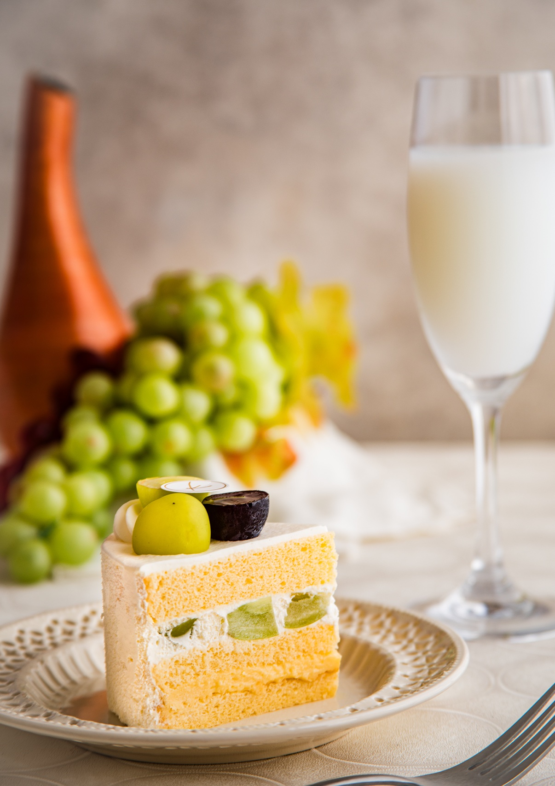

世界観を大切にしたい飲食店
For Whom
対象となるお客様
価格競争から抜けたいお店
海外や観光客に発信したい方
ブランドとして料理を育てたい方
Menu of Photography
用途別の撮影
飲食店のメニュー撮影
グランドメニューから季節メニュー、テイクアウトまで。お店の世界観に合わせた光で、注文したくなる一枚に仕上げます。
和菓子・スイーツ撮影
季節の上生菓子、ケーキ、ギフト商品。質感と色味を大切に、贈り物としての格まで伝えます。
食品・商品撮影
パッケージ、ECサイト、チラシ向けの撮影。背景や小物を含めたスタイリングにも対応します。
EC・SNS用撮影
通販ページやInstagramで使えるカットをまとめて撮影。浮遊感のある合成カットも可能です。

Price
料金について
料金は、撮影時間ではなく、撮影する品数と内容をもとに計算します。
単品撮影
単色の背景に商品のみを撮る、ライティングの組み直しのない撮影。1品につき2カット
¥3,000〜 / 品
集合写真
いろいろな料理を並べて、1枚に収める撮影
¥7,000〜 / カット
スタイリング撮影
プロップ（小物）や環境を作って、スタイリングして撮る撮影
¥7,000〜 / カット
編集が必要な撮影
浮かせるなどの合成・加工を伴う表現
¥7,000〜 / カット
最低料金
1品のみの撮影でも、一式で ¥18,000 となります
¥18,000 から
MINIMUM
最低料金 ¥18,000〜
撮影料と機材費の合計が ¥18,000 未満の場合は、最低料金 ¥18,000 が適用されます
- 別途、機材費として ¥10,000 を頂戴します
- 出張料金が別途掛かります（名古屋市内は無料）
- 納品は基本的に撮影から2週間以内 急ぎの場合はご相談ください
- 撮影のご相談は、公式LINEからお気軽にどうぞ
料金の具体例
料金は、品数と内容で決まります。時間では決まりません。標準は1品・2カットで ¥3,000〜／品、合計の最低額は ¥18,000 です。
例1 — お菓子1品・通常2カット
撮影 ¥3,000 ＋ 機材費 ¥10,000 ＝ ¥13,000
→ 最低額が適用され ¥18,000
こんな方に — 初めての撮影や、看板商品を1品だけ撮りたい方に
例2 — お菓子・パン5品・通常2カットずつ
撮影 5品 × ¥3,000 ＝ ¥15,000 ＋ 機材費 ¥10,000
＝ ¥25,000
こんな方に — メニューやEC用に、数品をまとめて撮りたい方に
例3 — 3品・うち2カットをスタイリング撮影で
撮影 3品 × ¥3,000 ＝ ¥9,000 ＋ スタイリング 2カット × ¥7,000 ＝ ¥14,000 ＋ 機材費 ¥10,000
＝ ¥33,000
こんな方に — 世界観のある一枚で、商品の顔を作りたい方に
※ 具体例も目安です。実際の金額は、撮影内容を確認したうえでのお見積りで決まります。
よくある質問
納品までどのくらいかかりますか
基本的に撮影から2週間以内です。お急ぎの場合はご相談ください。
出張料金はかかりますか
出張料金が別途掛かります（名古屋市内は無料）。
1品だけでもお願いできますか
はい。1品のみの撮影でも、一式で最低料金 ¥18,000 から承ります。
商品を送っての撮影はできますか
はい。リモート撮影（商品をお送りいただく形）も承ります。
相談はどこからできますか
公式LINEからお気軽にどうぞ。撮影したい商品とご希望の時期をお送りください。
Value
“Cheap photos cost you the most in the long run.”
安価な写真は、あなたのブランドの価値を『それなり』に固定してしまいます
Bi-lumeが提供するのは、世界中の人々が憧れを抱くための『価値の底上げ』です
Contact
撮影のご相談は
公式LINEから
まずは公式LINEで、撮影したい商品とご希望の時期をお送りください
内容を確認して、こちらからご返信します
LINEをご利用でない方は、メールまたはお問い合わせフォームからご連絡ください